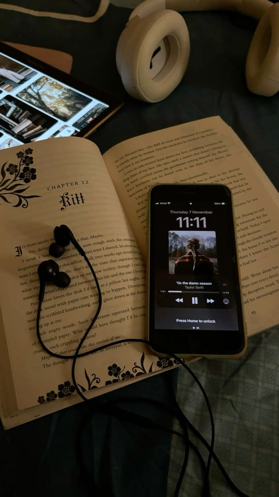
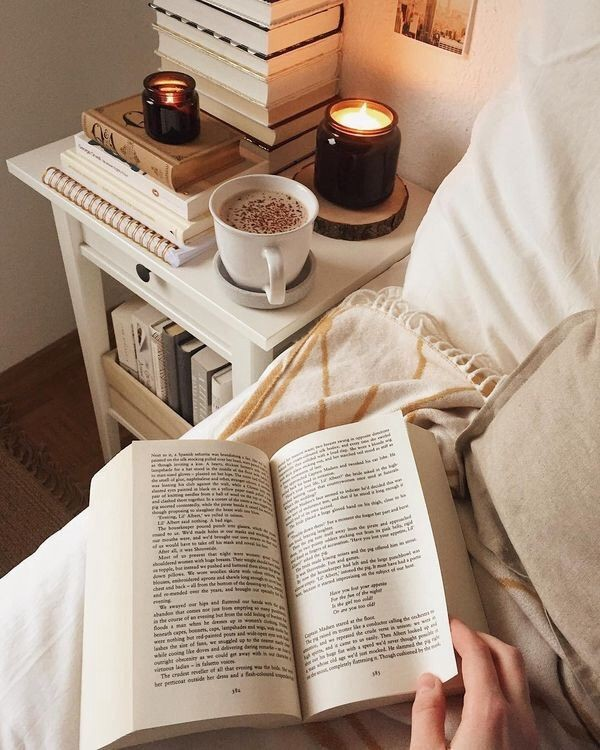
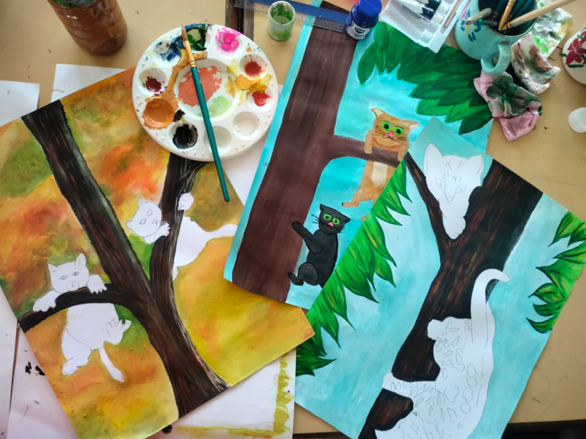

Things I Love To Do ✨

🎧 Listening to Music
Music keeps my mood alive! I enjoy getting lost in the melodies and lyrics.
📸 Photography
I love capturing moments, scenery, and beautiful things to keep the memories alive.

📚 Reading
Reading helps me relax, I feel like I am a traveler in the world of words. Reading also allows me to escape from reality and experience thousands of different stories.

🎨 Painting
I love to recreate the beauty I see in pictures, especially nature scenery flowers and animals.